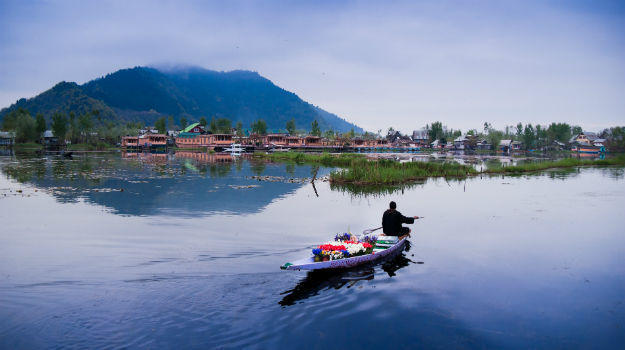
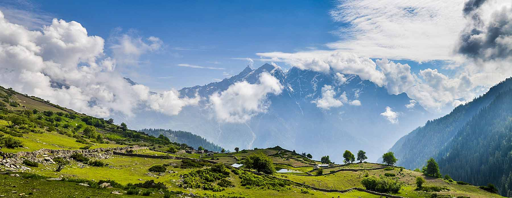
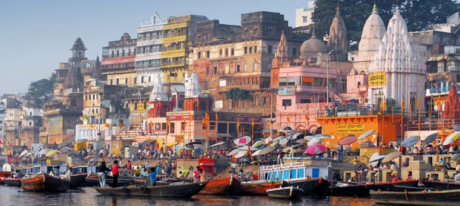
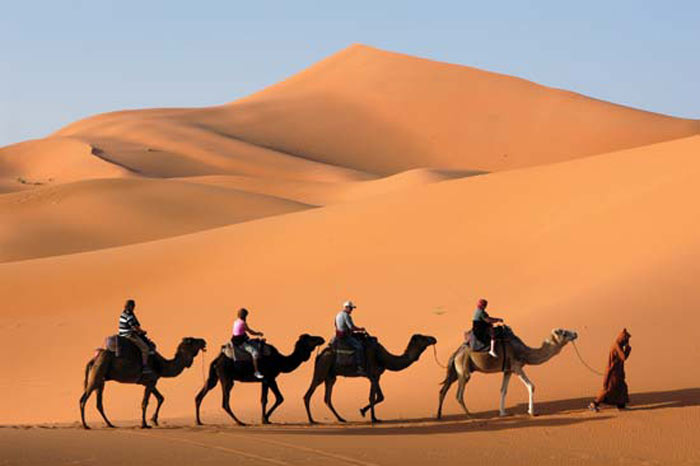
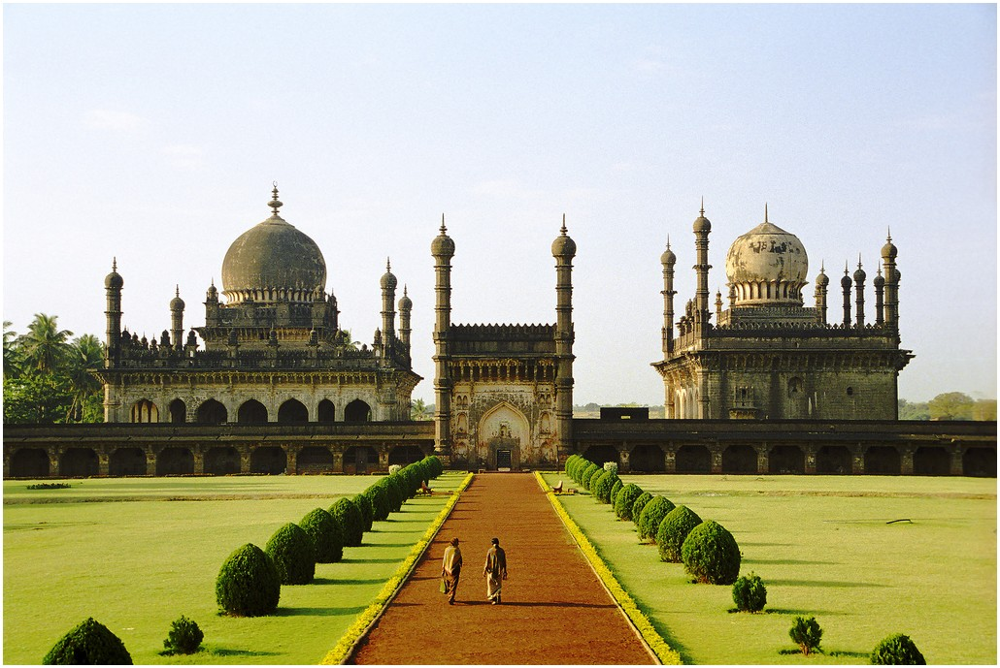
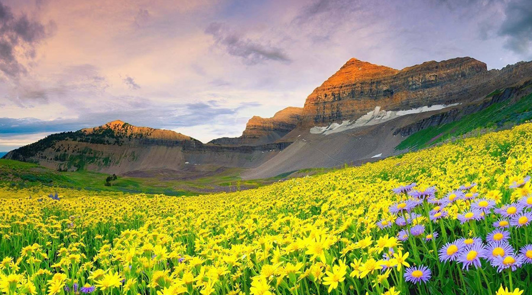

Indian Zones Northern India
Welcome to North India, North India is a region in the northern part of India. It includes the states Jammu and Kashmir, Haryana, Himachal Pradesh, Punjab, Uttar Pradesh and Uttarakhand. It also includes the Union Territory Chandigarh and Delhi. Delhi is the capital of the India. Chandigarh is the well planned city of the India. It has a diverse culture, and includes the Hindu pilgrimage centers of Char Dham, Haridwar, Mathura, Allahabad and Varanasi, the Buddhist Mahabodhi Temple, the Sikh Golden Temple in Amritsar, Punjab. It houses the world heritage sites such as the Valley of flowers, Qutb Minar, Taj Mahal etc. Folk dances like the bhangra of the Punjab, rouf and bhand pather of Kashmir are quite famous. Jammu and Kashmir is known as the paradise of the India. The states Uttarakhand and Himachal Pradesh houses the famous hill stations like Kullu, Manali, Shimla, Dharamsala, Palampur, Mussoorie, Dehradun, Nainital etc. Some other famous cities are Gurgaon, Kurukshetra, Jammu, Ladakh(Leh), Srinagar, Amritsar, Ludhiana, Jalandhar etc.
Tours to Delhi
Delhi, India's epicenter of power, is the city where an epic past meets a vibrant present. Anciently known as Indraprastha, the city was founded by the Pandava Kings around 1200 BC. The city of Delhi is mostly remembered and visited due to its high historical visibility. During your trip to Delhi, you will be visiting a number of religious, historical and political sites.
Tours to Jammu & Kashmir
Jammu and Kashmir is a state in northern India, often denoted by the acronym J & K. It is located mostly in the Himalayan mountains, and shares borders with the states of Himachal Pradesh and Punjab to the south. Jammu and Kashmir has an international border with China in the north and east, and the Line of Control separates it from the Pakistani-administered territories of Azad Kashmir and Gilgit-Baltistan in the west and northwest respectively. The state has special autonomy under Article 370 of the Constitution of India. Jammu and Kashmir consists of three regions: Jammu, the Kashmir Valley and Ladakh. Srinagar is the summer capital, and Jammu is the winter capital. Jammu and Kashmir is the only state in India with a Muslim-majority population. The Kashmir valley is famous for its beautiful mountainous landscape, and Jammu's numerous shrines attract tens of thousands of Hindu pilgrims every year. Ladakh, also known as "Little Tibet", is renowned for its remote mountain beauty and Buddhist culture.
Tours to Himachal Pradesh
Himachal Pradesh literally "Abode of Snow" is a state of India located in North India. It is bordered by Jammu and Kashmir on the north, Punjab and Chandigarh on the west, Haryana on the southwest, Uttarakhand on the southeast, and the Tibet Autonomous Region on the east. At its southernmost point, it also touches the state of Uttar Pradesh. The name was coined from the Sanskrit—Him means 'snow' and achal means 'land' or 'abode'—by Acharya Diwakar Datt Sharma, one of the state's eminent Sanskrit scholars. Himachal Pradesh is known for its natural environment, hill stations, and temples. Himachal Pradesh had the fifteenth highest per-capita income of Indian states and union territories for the year 2013-14. Many perennial rivers flow in the state. Numerous plants produce surplus hydro-electricity that is sold to other states, such as Delhi, Punjab, and Rajasthan.Tourism and agriculture are additional important parts of the state's economy.
Tours to Uttar Pradesh
Uttar Pradesh abbreviated, as UP, is the most populous state in the Republic of India as well as the most populous country subdivision in the world. The densely populated state, located in the northern region of the Indian subcontinent, has over 200 million inhabitants. It was created on 1 April 1937 as the United Provinces during British rule, and was renamed Uttar Pradesh in 1950. Lucknow is the capital city of Uttar Pradesh. The main ethnic group is the Hindi people, forming the demographic plurality. On 9 November 2000, a new state, Uttarakhand, was carved out from the Himalayan hill region of Uttar Pradesh. The state is bordered by Rajasthan to the west, Haryana, Himachal Pradesh and Delhi to the northwest, Uttarakhand and Nepal to the north, Bihar to the east, Madhya Pradesh to the south, and touches the states of Jharkhand and Chhattisgarh to the southeast. It covers 243,290 square kilometres (93,933 sq mi), equal to 7.33% of the total area of India, and is the fourth largest Indian state by area. Hindi is the official and most widely spoken language in its 75 districts along with English. It is the second largest Indian state by economy, with a GDP of ₹14.46 lakh crore (US$230 billion). Agriculture and service industries are the largest parts of the state's economy. The service sector comprises travel and tourism, hotel industry, real estate, insurance and financial consultancies.
Tours to Rajasthan
Rajasthan literally, "Land of Kings") is India's largest state by area (342,239 square kilometres (132,139 sq mi) or 10.4% of India's total area). It is located on the northwestern side of the India, where it comprises most of the wide and inhospitable Thar Desert (also known as the "Rajasthan Desert" and "Great Indian Desert") and shares a border with the Pakistani provinces of Punjab to the northwest and Sindh to the west, along the Sutlej-Indus river valley. Elsewhere it is bordered by five other Indian states: Punjab to the north; Haryana and Uttar Pradesh to the northeast; Madhya Pradesh to the southeast; and Gujarat to the southwest. Major features include the ruins of the Indus Valley Civilisation at Kalibanga; the Dilwara Temples, a Jain pilgrimage site at Rajasthan's only hill station, Mount Abu, in the ancient Aravalli mountain range; and, in eastern Rajasthan, the Keoladeo National Park near Bharatpur, a World Heritage Site known for its bird life. Rajasthan is also home to three national tiger reserves, the Ranthambore National Park in Sawai Madhopur, Sariska Tiger Reserve in Alwar and Mukundra Hill Tiger Reserve in Kota.
Tours to Punjab
Punjab is a state in northern India, forming part of the larger Punjab region. The state is bordered by the Indian states of Jammu and Kashmir to the north, Himachal Pradesh to the east, and Haryana to the south and southeast, Rajasthan to the southwest, and the Pakistan province of Punjab to the west. The state capital is located in Chandigarh, a Union Territory and also the capital of the neighbouring state of Haryana. After the partition of India in 1947, the Punjab province of British India was divided between India and Pakistan. The Indian Punjab was divided on the basis of language in 1966. It was divided into 3 parts. Haryanvi speaking areas (dialect of Hindi) were carved out as Haryana, Hilly regions and Pahari speaking areas formed Himachal Pradesh alongside the current state of Punjab.
Tours to Uttaranchal
Uttarakhand officially the State of Uttarakhand (Uttarākhaṇḍ Rājya), formerly known as Uttaranchal, is a state in the northern part of India. It is often referred to as the Devbhumi (literally "Land of the Gods") due to many Hindu temples and pilgrimage centres found throughout the state. Uttarakhand is known for the natural environment of the Himalayas, the Bhabhar and the Terai. On 9 November 2000, Uttarakhand became the 27th state of the Republic of India, being created from the Himalayan and adjoining northwestern districts of Uttar Pradesh. It borders Tibet to the north; the Mahakali Zone of the Far-Western Region, Nepal to the east; and the Indian states of Uttar Pradesh to the south and Himachal Pradesh to the west and north-west as well as Haryana on its south-western corner. The state is divided into two divisions, Garhwal and Kumaon, with a total of 13 districts. The interim capital of Uttarakhand is Dehradun, the largest city of the state, which is a railhead. The High Court of the state is located in Nainital.